Projects
POWER BI PROJECT
(Financial Dashboard)
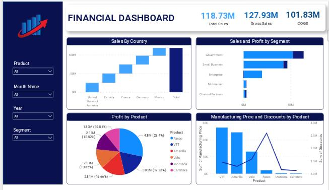Data Source: Secondary Data (Kaggle)
Financial Data Report Introduction This Dashboard provides an overview of a financial data, using various views in power bi. The data include total sales, country, segment, profit, product, discount, year, month. Each chart and visualizations is carefully selected to show insights in the financial data.
Waterfall chart explain:
The waterfall chart shows sales by each country and allows us to compare the sales by country.
United States of America is found to be the Country with the highest sales followed by Canada
across all segments and year, while Mexico is found to be the country with the lowest sales.
This insight helps us know the country with the highest and lowest sales also gives room to know
the country that needs attention and marketing strategy.
Click here to view Financial Dashboard Visualization
(Sales Dashboard)
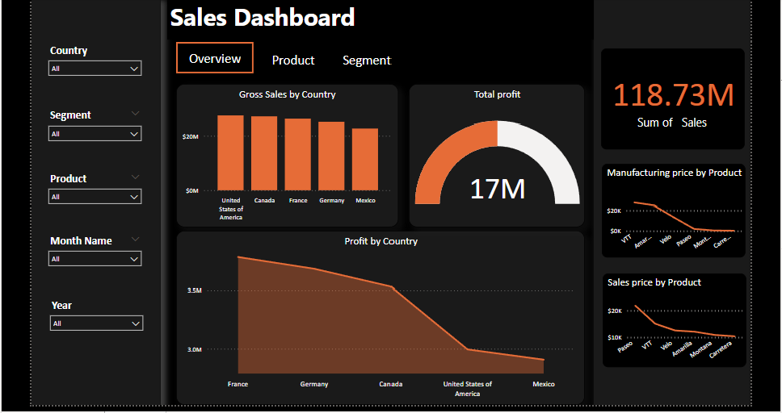Data Source: Secondary Data (Kaggle)
Sales Data Report Introduction> This Dashboard provides an overview of a sales data, using various views in power bi. The data include total sales, country, segment, profit, product, discount, year, month.
Each chart and visualizations is carefully selected to show insights in the financial data.
The Dashboard has
three display slides (overview, Segment, Product), two slides are hidden with button only the clicked button will be visible.
To display the hidden charts we need to click on ctrl key with the button, this will only display the needed chart
Bar chart explain:
This chart shows Gross sales by each country and allows us to compare the sales by country.
United States of America is found to be the Country with the highest sales followed by Canada
across all segments and year, while Mexico is found to be the country with the lowest sales.
This insight helps us know the country with the highest and lowest sales also gives room to know
the country that needs attention and marketing strategy.
Clich Here to View Sales Dashboard
(Sales Dashboard)
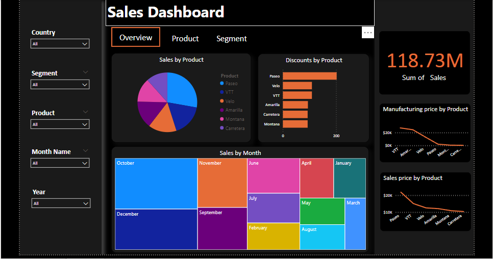Data Source: Secondary Data (Kaggle)
Sales Data report Introduction: Second view of the dashboard, this displays sales by product, discount and month with the highest sales
Pie chart explain:
This chart shows sales by each product across the years and all segment, Paseo has the highest sales followed by VTT
while carretera is the product with the lowest sales.
(Sales Dashboard)
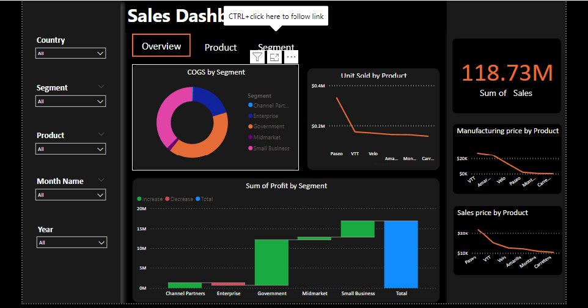Data Source: Secondary Data (Kaggle)
Sales Data Report Introduction: This visualization gives details about Segment. Profit made by each segment, COGS by each segment.
Doughnut chart explain: This chart shows sales distribution by each segment, out of five available segments Government made the highest contribution to sales while channel partners made the lowest contribution.
(Real Estate Dashboard)

Data Source: Secondary Data (Kaggle)
Data report Introduction: This Dashboard provides an overview of real estate data, using various views in power bi to discover hidden insights in the data.
Linechart explain:
This chart shows distribution between Total income by each state. Following the line trend Santa has the highest Total income,
it reduced a bit when it got to Rio de jan while Total Income reduced drastically in Tocantins, this means Tocantins has the lowest
total income while Santa has the highest Total Income.
The Doughnutchart also shows that in the two property_type available apartment has the highest total income of 80.53%
while house has the lowest Total income of 19.47%
Clich Here to View Real Estate Dashboard
(Movie Dashboard)

Data Source: Secondary Data (Kaggle)
Movie Data Report Introduction This Dashboard provides an overview of a movie data, using various views in power bi. The data include movie title, movie directors, generes, year, user rating, movie cast.
Guage chart explain:
The guage chart shows all uploaded movie title and the total is 24.40k while the total movie overview is 23.96k .
Slicer is used on the dashboard to filter the records, movie director and generes can be use in performing filtering on the dashboard.
Clich Here to View Movie Dashboard
(Sales Dashboard)

Data Source: Secondary Data (Kaggle)
Sales Data Report Introduction: This Dashboard provides an overview of a sales data, using various views in power bi. The data include total sales, year, type of tree, no of tree sold. Each chart and visualizations is carefully selected to show insights in the sales data.
Bar chart explain:
The chart shows total sales of tree made by each year, 2016 happens to be the year with the highest tree sold while year 2010 has the lowest tree sold.
Slicer is used on the dashboard to filter the records (types of tree, year,index), this slicers is useful to select needed information only.
Clich Here to View US Trees Dashboard
(Sales Dashboard)

Data Source: Secondary Data (Kaggle)
Sales Data Report Introduction: This Dashboard provides an overview of a sales data data, using various views in power bi to derive meanigful insights. The data include total income, cogs, customer type, branch, city. Each chart and visualizations is carefully selected to show insights in the data.
Card chart explain:
The card chart shows the total income made in the company across all region, branch, city and customer type. Information on the
card changes according to the filter data. Out of the three city available in the data Naypyitaw has the highest cost of goods sold while Mandaley has the lowest cost of goods sold. The dashboard information
can be filtered with Gender and Payment type slicer to select needed information only.
Clich Here to View Sales Dashboard
Tableau Project
(Youtube Dashboard)
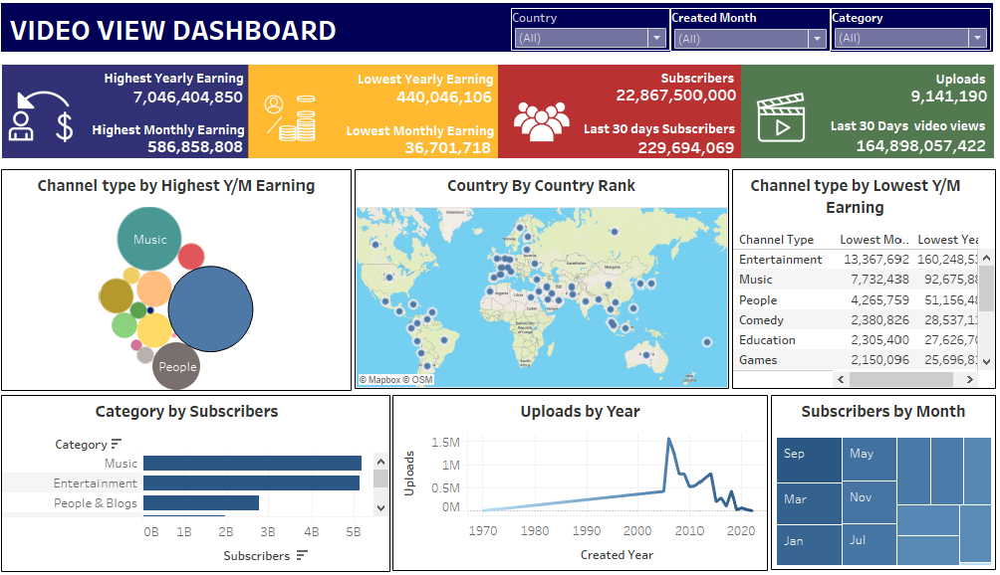Data Source: Secondary Data (Kulturehire)
Data Report Introduction: This dashboard gives insight about social media data (Youtube), using different charts in Tableau to provide the information.
The data used include (Highest monthly and yearly earning, Lowest monthly and yearly earning, number of movies uploads, Country, Subscribers, Category).
Tree Map chart: This chart shows the distribution of subscribers by month, September has the highest subscribers among available months. The distribution
between category and subscribers shows that Music has the highest contribution when it comes to subscribers followed by Entertainment which has a slight difference from Music.
The map chart shows the distribution between Country and Country Rank, that is each Country and their rank according to the data. Category, Country, Created Month is used as slicer
to filer the records by selecting the needed information only.
Tableau Project
(Sales Dashboard)
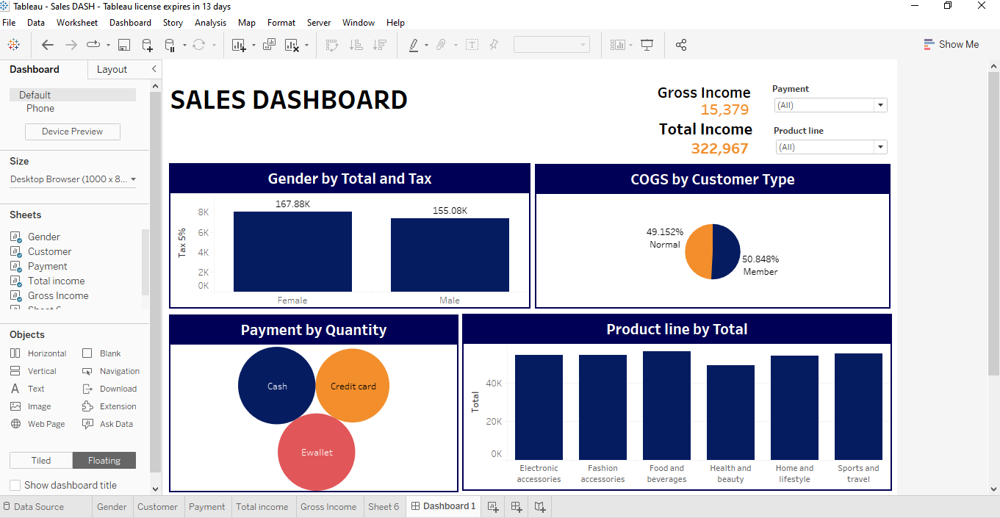Data Source: Secondary Data (Kulturehire)
Data Report Introduction: This dashboard gives overview of a particular sales data gotten from kaggle, using different charts in Tableau to visualize the information. The data used include
Cogs, Total, Tax, Gender, Product line, Quantity.
Bar Chart: This chart shows the distribution between Gender, Total sales made and Tax. Among two gender Female has the highest contribution to sales
with value of 167.88k while Male has the lowest distribution with value of 155.08k, also Female has highest Tax while Male has lowest tax.
EXCEL PROJECT
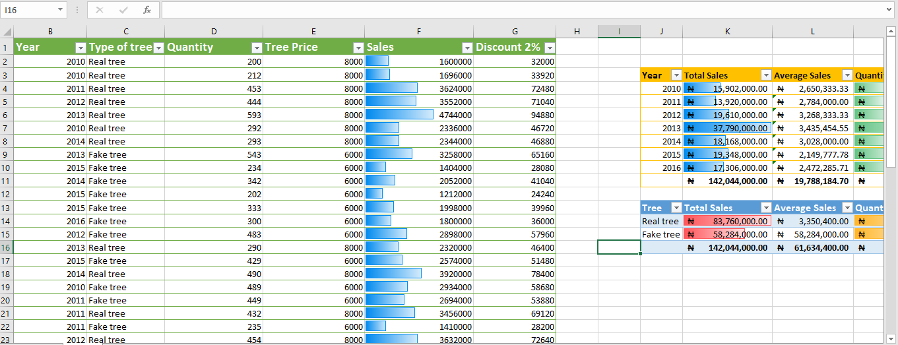
Data Source: Secondary Data (Kaggle)
DescriptionThis is a sales data that inolve the sales of two particular product, data columns include (Sales, Type of Trees,Quantity,Year,Tree PRice). Data cleaning was performed on the data to make it a standardized data. Data formatting was applied such as conditional formatting to highlight sales column, and this made it known to us that 2013 had the highest sales while 2011 had lowest sales. Total sales, Average sales and Quanity sold by each quantity and type of tree was derived from the data using excel function.
Gen Z PROJECT
(Data Standardization)

Data Source: Secondary Data (Kulturehire)
Description: This is a Gen Z data which has so many column that needs to be cleaned and standardized. This data was cleaned with excel power query, irrelevant values were removed, rows with comma were splitted into another rows, columns were renamed to make standard column name (for example Gender of respondents changed to Gender), filter was used to select needed Country alone.
Pivot Table
Creating Pivot Tables
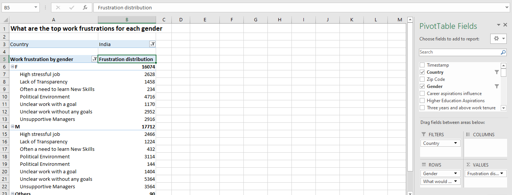Data Source: Secondary Data (Kulturehire)
Description: Pivot table was created to answer the objective questions in the project like (Distribution of work frustration between gender). The pivot table was filtered with Country to select respondents from India alone.
DATA VISUALIZATION IN EXCEL (Gen Z Dashboard)
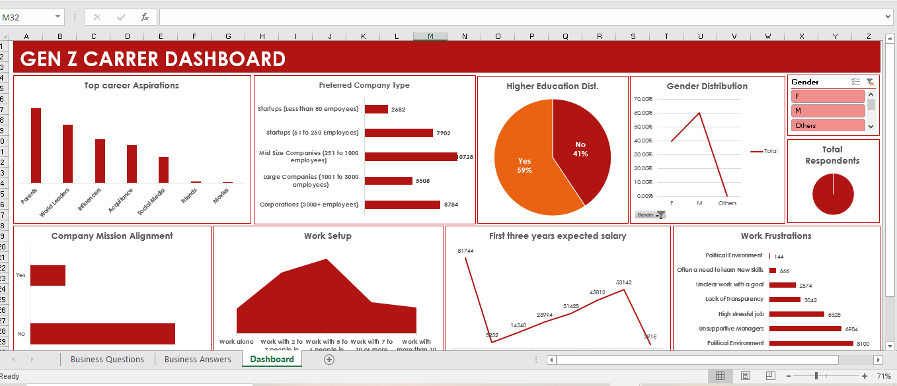Data Source: Secondary Data (Kulturehire)
DescriptionThis dashboard provides an overview of Gen Z data showing different Distribution between Gender, Work setup, Salary range, Work frustration, choosing India from the diverse country available. This Dashboard gives insight of respondents who wants to pursue higher education, 59% respondents wants to pursue their higher education while 41% doesn't. Parents has highest value in Top career aspirations while Movies contributed the least to Top career aspirations. Male has highest contribution in Gender Respondents while Others made the least contribution. The dashboard has slicer with Gender data to get insight in Male,Female or Others alone who want to pursue higher education.
Learning Aspiration Dashboard

Data Source: Secondary Data (Kulturehire)
DescriptionThis dashboard provides an overview of Gen Z data showing different Distribution between Caareer Aspirations, Gender, Work Tenure, Higher education aspiration choosing India from the diverse country available. This Dashboard gives insight of respondents who wants to pursue higher education, 59% respondents wants to pursue their higher education while 41% doesn't. Parents has highest value in career aspirations while Movies contributed the least to career aspirations. Male has highest contribution in Gender Respondents while Others made the least contribution.
SQL PROJECT
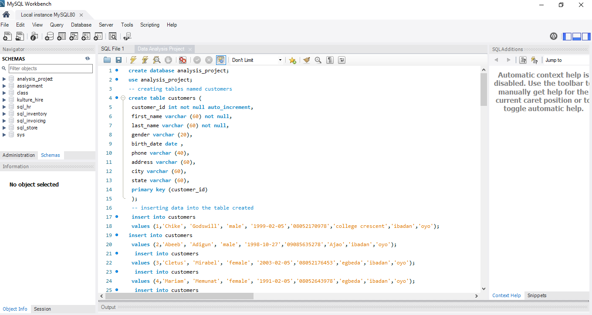Data Source: Primary Data
Description: This project deals creating database, tables and inserting rows into the created table. The table has primary key, foreign key, auto increment and each column has data type that corrolate with the column. Some data query was performed like selecting all column, joining two tables and also aggregate functions. Update and Altering function was used to update the table and also to change column name, modify and add new column.
Kulturehire Project
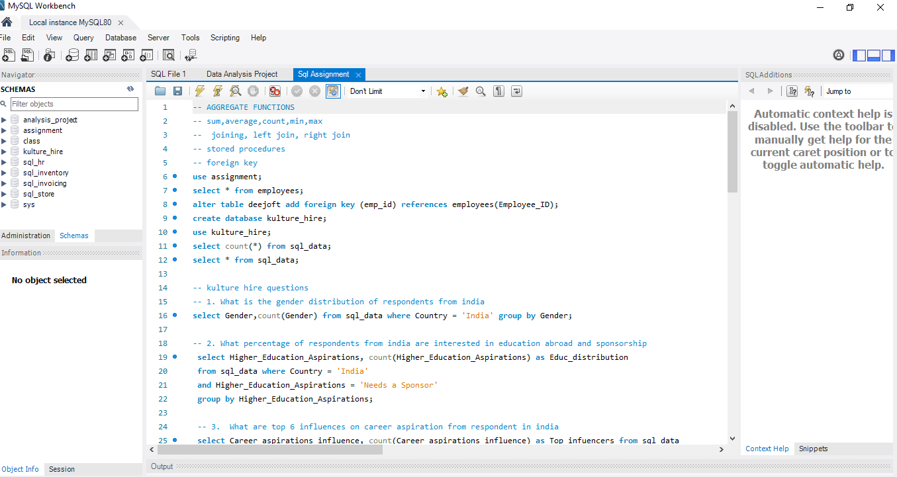Data Source: Secondary Data (Kulturehire)
Description: The data used for this project (Gen Z Aspirations) was provided by kulturehire team, the data was imported and it's used to answer the sql querying questions using terms like order by, group by, sum, count.
SPSS PROJECT

Data Source: Secondary Data
Description: Descriptive statistics is performed on the data to get frequency and valid percent. Customer type distribution shows that Member has the highest frequency while Normal has lower frequency with difference of 2
Hypothesis Testing using Chi Square

Description: Chi square was used to check the significant effect betweeen Product line and Gender. From the result chi square value of 0.332 implies that we reject H1 and accept H0 that Gender does not have significant effect on product line.